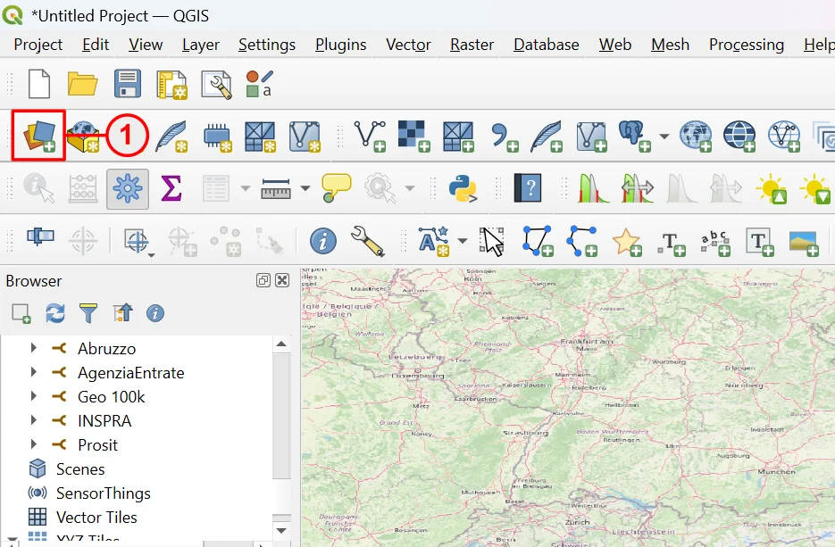
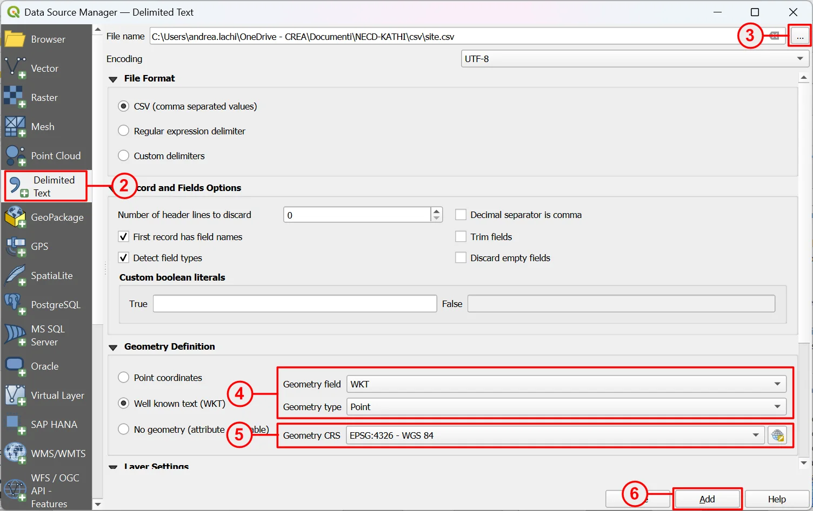
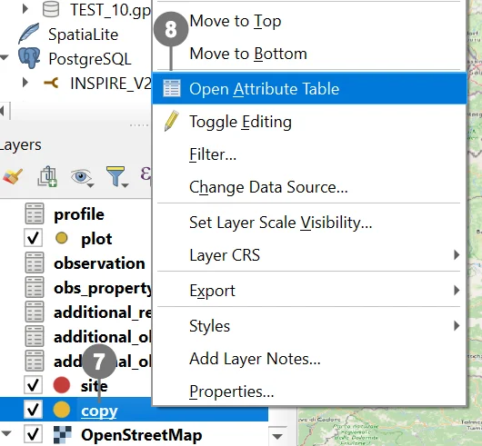
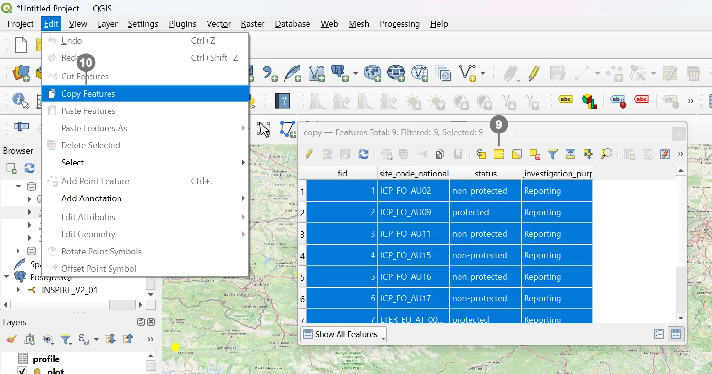
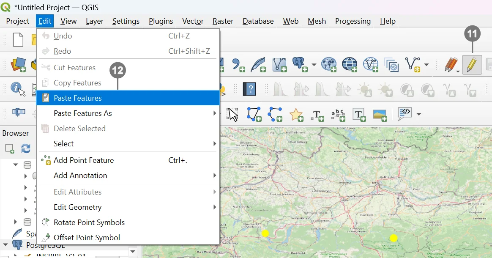

This guide describes two QGIS‑only ways to load geometry into the soilwise GeoPackage:
1) a native “out‑of‑the‑box” workflow using standard QGIS tools, and
2) a simplified workflow via a dedicated QGIS plugin (wizard‑style).
Note
Before importing, confirm that each source layer’s geometry type (including multipart vs singlepart) matches the soilwise model expectation.
Warning
The target GeoPackage expects layers in ETRS89 / LAEA Europe (EPSG:3035) and enforces geometry types and integrity via constraints/triggers defined in the schema.
The import of geometries into an existing table of a GeoPackage with QGIS is structured in three main steps:
Let’s look at each step in detail.
QGIS allows the import of geometries from various formats, such as CSV, Shapefile, or other GeoPackages. In this example, we will import data from a CSV file.


In our example, select CSV ② as the source format and proceed with importing the desired file ③.
Check the geometry type (e.g., WKT or coordinates separated into latitude/longitude) ④.
Set the correct Coordinate Reference System (CRS) ⑤.
Click Add ⑥ to create the layer (in this case, a point layer) in the project.
Warning
For the copy–paste operation to work correctly, the source layer (from which geometries are copied) must have the same fields (name and data type) as the destination layer, or at least match the required fields.
This check can be done during the import phase, later using QGIS tools, or by using an RDBMS to modify or remove unnecessary fields.
In this example, since the check was not performed during import, a temporary support layer named “copy” was created and used for preprocessing.

Right‑click the layer name ⑦ and, from the context menu, select Open Attribute Table ⑧ to view its data.

Copy the geometries ⑩.

Paste the geometries. ⑫
Save the changes.
To support this procedure, there is also a QGIS plugin that simplifies and extends the described steps.
It is called AppendFeaturesToLayer and is available at:
github.com/gacarrillor/AppendFeaturesToLayer
The plugin includes two geoprocessing tools:
For complex mappings, schema reconciliation, and automation, consider:
HALE Studio — Open‑source ETL focused on harmonization toward standards (OGC/INSPIRE), with integrated validation and broad format support; helpful to define and document repeatable transformations. https://wetransform.to/halestudio/
KNIME — Visual data/ETL platform with hundreds of connectors/nodes; suitable for reusable and scheduled pipelines, DB integrations, and more. https://www.knime.com/